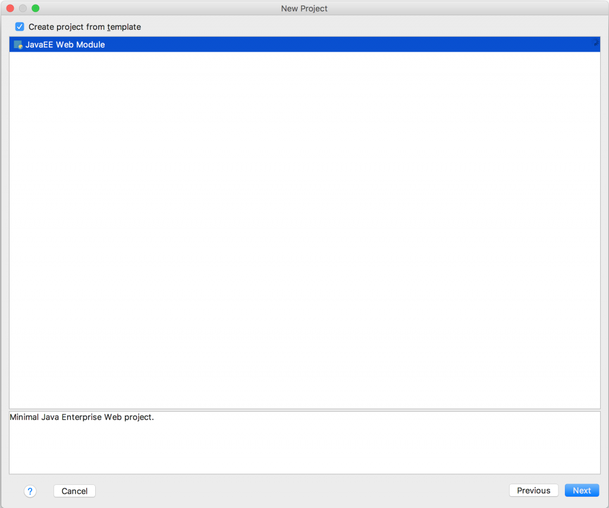

(Updated 2016-11-30 by Alasdair Nottingham using IntelliJ IDEA 2016.3)
(Updated 2016-03-16 by Adam Fielding using IntelliJ IDEA 15.0.4.)
When we first released the Liberty we also released some great tools for developing applications with Eclipse, but what if you aren’t using Eclipse? What if you are using (as an example) IntelliJ IDEA? Well, fear not because the awesome guys at JetBrains have released support in IntelliJ IDEA for developing applications with WAS Liberty. As you might imagine if you are used to using IntelliJ it is integrated nicely into the IDE as you would expect for any other Java EE runtime.
Disclaimer:- I’m an Eclipse user, my first experience of IntelliJ IDEA was trying to write this article, so if you are an expert and I talk about doing something a dumb way I’m happy for you to let me know and I’ll update this article.
I thought I would develop a very simple Hello World application using IntelliJ and document my experience, just to show how easy it is.
- The first step is to download the latest version of Liberty. Unzip the archive into your location of choice.
- Now we need to create and configure the server we will use to deploy our application. From within your
wlpdirectory, runbin/server create. This will create a serverdefaultServerin the directorywlp/users/servers. - Now that we have created our server, we can edit the configuration. Open
wlp/users/servers/defaultServer/server.xml. Add<featureManager> <feature>localConnector-1.0</feature> </featureManager>and
<applicationMonitor updateTrigger="mbean" />
(Unfortunately IntelliJ does not provide a tool to edit the
server.xmlfrom within its interface, unlike WDT Eclipse.) Our server is now configured, so save the file. - Then you need to download and install IntelliJ IDEA Ultimate Edition (for Java EE support). You want the latest release of version 15. Sounds kind of obvious but, once you’ve installed it, you should launch the IDE.
- The first step in IntelliJ is to create a project. IntelliJ provides a splash screen to od this, but you can also use File > New > Project.
- In the new Project wizard, select Java Enterprise, point the Project SDK: field to your Java directory. Select Java EE 7 as your Java EE Version. Leave the Application Server field blank, and then click Next.
- Ensure that Create project from template is checked, and that JavaEE Web Module is highlighted. Then click Next.
 - Enter
HelloWorldas the project name and provide the project location. - For Application Server, click New…, and from the drop down, select WebSphere Server.
- Point WebSphere Home: to your newly installed Liberty directory. IntelliJ should automatically detect the version of Liberty installed, so click OK, the click Finish.
- The new project will contains an
index.jspunder the HelloWorld > web folders. Open this file and we will start editing it.
- First of all, let’s give the JSP an appropriate title. To do this, update
indexto beHelloWorld - Between the
<body>and</body>tags add:<h1>Good <% if (new GregorianCalendar().get(Calendar.HOUR_OF_DAY) < 12) {%> Morning <% } else { %> Afternoon <% } %></h1> - Make sure the following imports are at the top of the JSP:
<%@ page import="java.util.Calendar" %> <%@ page import="java.util.GregorianCalendar" %>
- Save the file. We are now ready to deploy our application.
- Click the Run menu and select Run. In the pop up a dialog, click the WebSphere option in the dialog:
- IntelliJ IDEA 2016.3 or newer can deploy the application to Liberty so the files from the project are used directly, avoiding the need to rebuild and deploy the application as a war or ear file. This is not enabled by default. To enable select the ‘Build … artifact’ entry in the list box on the server tab labeled ‘Before launch: Make, Build Artifacts, Activate tool window’ and then click –. Then click +.
- Select Build loose Applications.
- Ensure the desired modules are selected and click OK.
- Now click run:
{kind=link}
{kind=link}
{kind=link}
{kind=link}
{kind=link}
{kind=link}
{kind=link}
{kind=link}
{kind=link}
IntelliJ will launch deploy the application, start the server, and open a web browser for you. http://localhost:9080/web_war_exploded/HelloWorld.jsp.
If you see this error message in the log file (and the application doesn’t start):
[ERROR ] CWWKZ0002E: An exception occurred while starting the application web_war_exploded. The exception message was: java.lang.IllegalStateException: com.ibm.wsspi.adaptable.module.UnableToAdaptException: com.ibm.ws.javaee.ddmodel.DDParser$ParseException: CWWKC2262E: The server is unable to process the 3.1 version and the http://java.sun.com/xml/ns/javaee namespace in the /WEB-INF/web.xml deployment descriptor on line 6.
it is because IntelliJ IDEA created the web.xml with the wrong schema namespace for Servlet 3.1. This can be fixed by editing the web.xml and changing the namespace http://java.sun.com/xml/ns/javaee which is correct for Servlet 3.0 to http://xmlns.jcp.org/xml/ns/javaee which is correct for Servlet 3.1.
The tools don’t appear to have as much function as the WebSphere Developer Tools; for example, you can’t download and install the runtime from the tools and there doesn’t seem to be a built-in server configuration editor. But if your IDE of choice is IntelliJ, you are good to go.
Hello,
If I make Java changes, stop the server and start it again, my changes are not getting reflected the first time. But it is working from the second time if I launch the application again. Latest code changes are used only from the second launch.
I am using Intellij 2019.2(Ultimate edition) and Liberty 18.0.0.3.
Am I missing any configuration? TIA.
Please also take a look at the IntelliJ help page at https://www.jetbrains.com/help/idea/run-debug-configuration-websphere-server.html#d17085e2045
which describes the support for WAS Traditional and Liberty.
In IntelliJ 2016 you dont have to edit the server.xml manually.
IntelliJ provides a Fix Button in Step 17, when running websphere.
The Fix-Button performs the changes in the server.xml:
webProfile-7.0
localConnector-1.0
Once more with escaped xml:
In IntelliJ 2016 you dont have to edit the server.xml manually.
IntelliJ provides a Fix Button in Step 17, when running websphere.
The Fix-Button performs the changes in the server.xml:
<?xml version="1.0" encoding="UTF-8"?>
<server description="new server">
<!– Enable features –>
<featureManager>
<feature>webProfile-7.0</feature>
<feature>localConnector-1.0</feature>
</featureManager>
<!– To access this server from a remote client add a host attribute to the following element, e.g. host="*" –>
<httpEndpoint id="defaultHttpEndpoint" httpPort="9080" httpsPort="9443" />
<!– Automatically expand WAR files and EAR files –>
<applicationManager autoExpand="true" />
<applicationMonitor updateTrigger="mbean" />
</server>
These instructions are a little dated with IntelliJ v15.
1. unzip the WebSphere Liberty from herehttps://developer.ibm.com/wasdev/downloads/liberty-profile-using-non-eclipse-environments/
2. install admin center
bin/installUtility install adminCenter-1.0
3. Modify config usr/servers/defaultServer/server.xml
adminCenter-1.0
localConnector-1.0
restConnector-1.0
ssl-1.0
webProfile-7.0
mike
${server.config.dir}
4. ensure it starts okay
bin/server start
https://localhost:9443/adminCenter/ (username: mike password: mike)
bin/server stop
5. new project, ‘Java Enterprise’, ‘Web Application’
6. make changes as above
Hope that helps someone else.
Looks like I lost the xml characters… trying to convert them to html
<?xml version=”1.0″ encoding=”UTF-8″?>
<server description=”new server”>
<featureManager>
<feature>adminCenter-1.0</feature>
<feature>localConnector-1.0</feature>
<feature>restConnector-1.0</feature>
<feature>ssl-1.0</feature>
<feature>webProfile-7.0</feature>
</featureManager>
<!– Define a keystore for the HTTPS port –>
<keyStore id=”defaultKeyStore” password=”Liberty” />
<basicRegistry id=”basic” realm=”BasicRealm”>
<user name=”mike” password=”mike” />
</basicRegistry>
<administrator-role>
<user>mike</user>
</administrator-role>
<!– Allows remote file access for config changes –>
<remoteFileAccess>
<writeDir>${server.config.dir}</writeDir>
</remoteFileAccess>
<!– to get rid of the ‘weak Diffie-Hellman’ message from chrome –>
<ssl id=”defaultSSLConfig” keyStoreRef=”defaultKeyStore” securityLevel=”CUSTOM” enabledCiphers=”TLS_RSA_WITH_AES_128_CBC_SHA TLS_RSA_WITH_AES_128_CBC_SHA256 ” />
<!– To access this server from a remote client add a host attribute to the following element, e.g. host=”*” –>
<httpEndpoint id=”defaultHttpEndpoint” httpPort=”9080″ httpsPort=”9443″ />
<!– Automatically expand WAR files and EAR files –>
<applicationManager autoExpand=”true” />
<applicationMonitor updateTrigger=”mbean” />
</server>
Thanks, Mike. I’ll get the article updated but your comments will help in the meantime. 🙂
Hi Mike,
The article has been updated for v15.0.4. As we’re not so familiar with IntelliJ IDEA, please feel free to shout if there’s something you think should be done differently. 🙂
Cheers,
Laura
whatever i copy past from this site didnt show, i was referring to Update the configuration in
https://developer.ibm.com/wasdev/docs/creating-a-simple-helloworld-spring-servlet
but when i add maven part of my project , this stop working,
what i got:
jar project that use spring, rap in war rap in ear
then when i deploy the ear using intellj it give me null error each time i call something in spring,
tried to change server.xml to
it didnt work,, what i need to do?
Hi S, sorry for not replying sooner (like a year ago!). On the off-chance that this is still a problem, could you post it on Stack Overflow (http://stackoverflow.com/questions/ask/?tags=websphere-liberty) please so that more people will see it and hopefully reply?
Thanks,
Laura